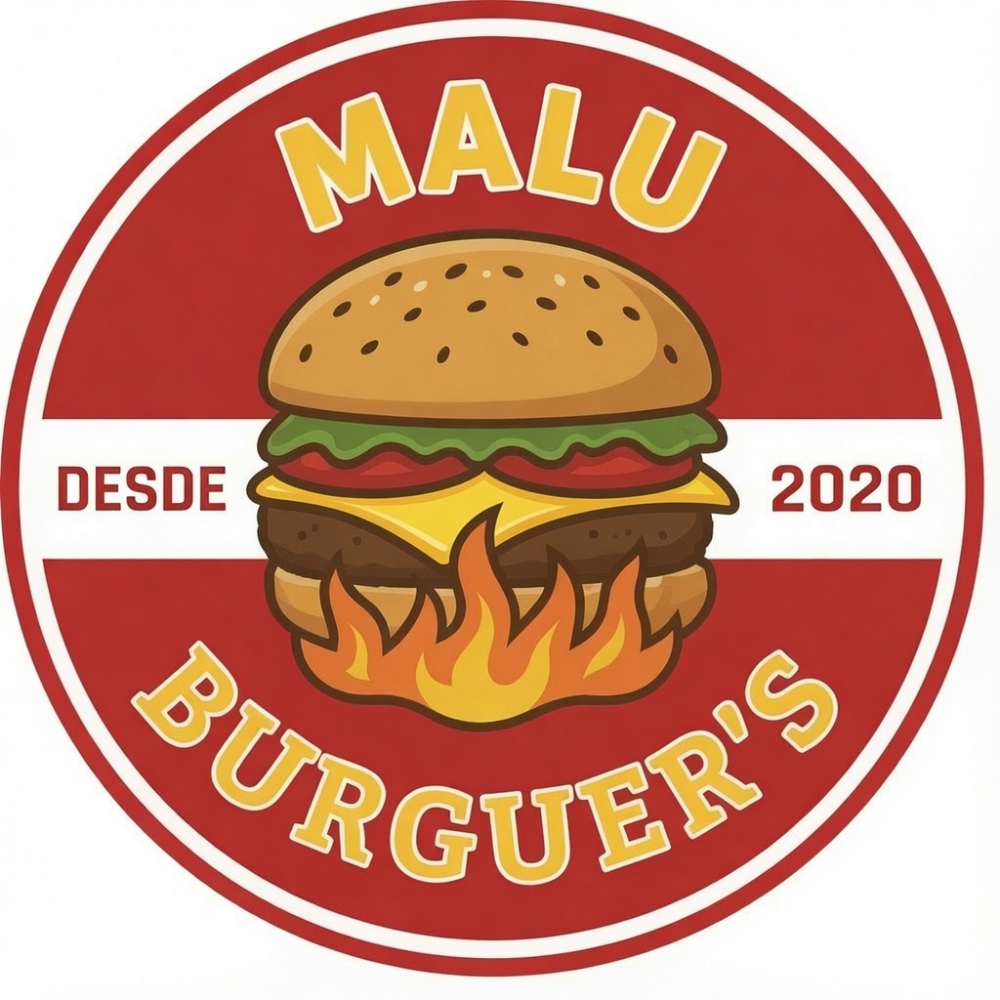

Trio Piscininha Artesanal
Artesanal, cheddar, bacon, batata e bebida. O tipo de combo que segura a primeira dobra do site.
Confirmar no cardápio
Malu Burguer's PedirEntrega e retirada
Burger quente, batata sequinha e sobremesa carro chefe. Escolheu, abriu o cardápio, pediu.
Os destaques entram como vitrine, não como cardápio gigante. Valor final sempre no cardápio oficial.
Artesanal, cheddar, bacon, batata e bebida. O tipo de combo que segura a primeira dobra do site.
Confirmar no cardápioA Malu Burguer's é aquela pedida direta: hambúrguer caprichado, combo esperto, batata pra acompanhar e sobremesa pra fechar.
Trios prontos Burger, batata 150g e bebida no mesmo pedido.
Artesanais Opções com carne da casa e muita presença visual.
Caixas Combos para 2, 3 ou 4 pessoas.
Batatas Simples, turbinadas e piscininhas com cheddar.
Sobremesas Um dos carros chefes pra fechar o pedido.
Nem todo mundo vem só pelo burger. As sobremesas entram com destaque próprio porque também puxam pedido e fecham a experiência.
Ver sobremesasEnquanto as fotos oficiais não entram, o site segura a identidade com logo, cor, textura e apetite visual.
Atendimento com entrega e retirada, conforme exibido no Cardápio Web.
Escolhe seu burger, confere o cardápio e confirma entrega, retirada e valor final direto no atendimento oficial.